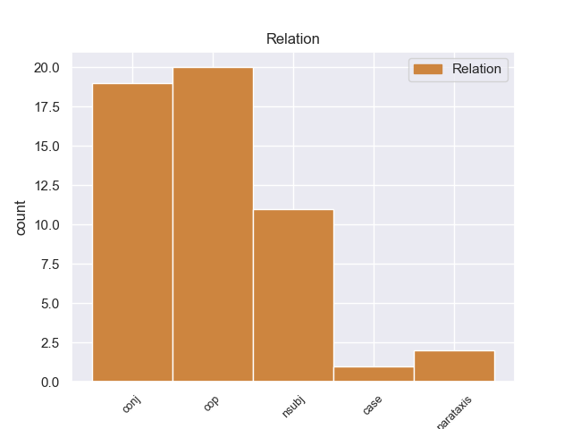
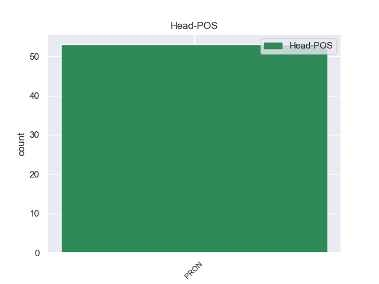
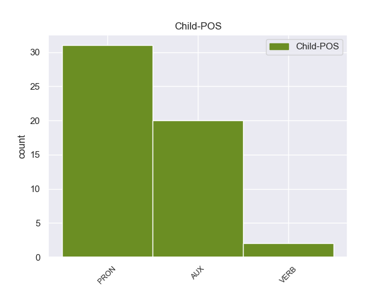

Distribution of features within this leaf



Agreement Rules sorted by frequency.
- When the dependent token is the conjunct(conj) of the head token, and the head token is PRON
1 1 _ _ _ _ 0 _ _ _
2 ) _ _ _ _ 0 _ _ _
3 When _ _ _ _ 0 _ _ _
4 you _ _ _ _ 0 _ _ _
5 get _ _ _ _ 0 _ _ _
6 the _ _ _ _ 0 _ _ _
7 bird _ _ _ _ 0 _ _ _
8 , _ _ _ _ 0 _ _ _
9 place _ _ _ _ 0 _ _ _
10 him he PRON PRP Case=Acc|Gender=Masc|Number=Sing|Person=3|PronType=Prs 0 _ _ _
11 or _ _ _ _ 0 _ _ _
12 her _ _ _ _ 0 _ _ _
13 or _ _ _ _ 0 _ _ _
14 them they PRON PRP Case=Acc|Number=Plur|Person=3|PronType=Prs 10 conj 9:obj|10:conj:or _
15 in _ _ _ _ 0 _ _ _
16 the _ _ _ _ 0 _ _ _
17 cage _ _ _ _ 0 _ _ _
18 . _ _ _ _ 0 _ _ _
1 I _ _ _ _ 0 _ _ _
2 know _ _ _ _ 0 _ _ _
3 New _ _ _ _ 0 _ _ _
4 York _ _ _ _ 0 _ _ _
5 pizza _ _ _ _ 0 _ _ _
6 and _ _ _ _ 0 _ _ _
7 this _ _ _ _ 0 _ _ _
8 is be AUX VBZ Mood=Ind|Number=Sing|Person=3|Tense=Pres|VerbForm=Fin 10 cop 10:cop _
9 not _ _ _ _ 0 _ _ _
10 it it PRON PRP Case=Nom|Gender=Neut|Number=Sing|Person=3|PronType=Prs 0 _ _ _
11 !! _ _ _ _ 0 _ _ _
1 There _ _ _ _ 0 _ _ _
2 is _ _ _ _ 0 _ _ _
3 a _ _ _ _ 0 _ _ _
4 corporate _ _ _ _ 0 _ _ _
5 data _ _ _ _ 0 _ _ _
6 sheet _ _ _ _ 0 _ _ _
7 for _ _ _ _ 0 _ _ _
8 this _ _ _ _ 0 _ _ _
9 company _ _ _ _ 0 _ _ _
10 , _ _ _ _ 0 _ _ _
11 but _ _ _ _ 0 _ _ _
12 this _ _ _ _ 0 _ _ _
13 entity _ _ _ _ 0 _ _ _
14 seems _ _ _ _ 0 _ _ _
15 to _ _ _ _ 0 _ _ _
16 have _ _ _ _ 0 _ _ _
17 been _ _ _ _ 0 _ _ _
18 inactive _ _ _ _ 0 _ _ _
19 since _ _ _ _ 0 _ _ _
20 it it PRON PRP Case=Nom|Gender=Neut|Number=Sing|Person=3|PronType=Prs 0 _ _ _
21 's be VERB VBZ Mood=Ind|Number=Sing|Person=3|Tense=Pres|VerbForm=Fin 20 case 20:case _
22 creation _ _ _ _ 0 _ _ _
23 . _ _ _ _ 0 _ _ _
1 It it PRON PRP Case=Nom|Gender=Neut|Number=Sing|Person=3|PronType=Prs 7 nsubj 7:nsubj _
2 is _ _ _ _ 0 _ _ _
3 like _ _ _ _ 0 _ _ _
4 a _ _ _ _ 0 _ _ _
5 mini _ _ _ _ 0 _ _ _
6 tablet _ _ _ _ 0 _ _ _
7 itself itself PRON PRP Gender=Neut|Number=Sing|Person=3|PronType=Prs 0 _ _ _
8 ! _ _ _ _ 0 _ _ _
Disagree Examples:
1 They _ _ _ _ 0 _ _ _
2 trust _ _ _ _ 0 _ _ _
3 you you PRON PRP Case=Acc|Person=2|PronType=Prs 0 _ _ _
4 and _ _ _ _ 0 _ _ _
5 me I PRON PRP Case=Acc|Number=Sing|Person=1|PronType=Prs 3 conj 2:obj|3:conj:and|8:nsubj:xsubj _
6 to _ _ _ _ 0 _ _ _
7 be _ _ _ _ 0 _ _ _
8 befuddled _ _ _ _ 0 _ _ _
9 by _ _ _ _ 0 _ _ _
10 their _ _ _ _ 0 _ _ _
11 actions _ _ _ _ 0 _ _ _
12 , _ _ _ _ 0 _ _ _
13 while _ _ _ _ 0 _ _ _
14 they _ _ _ _ 0 _ _ _
15 " _ _ _ _ 0 _ _ _
16 do _ _ _ _ 0 _ _ _
17 as _ _ _ _ 0 _ _ _
18 they _ _ _ _ 0 _ _ _
19 wilt _ _ _ _ 0 _ _ _
20 " _ _ _ _ 0 _ _ _
21 . _ _ _ _ 0 _ _ _
1 They _ _ _ _ 0 _ _ _
2 trust _ _ _ _ 0 _ _ _
3 you you PRON PRP Case=Acc|Person=2|PronType=Prs 0 _ _ _
4 and _ _ _ _ 0 _ _ _
5 me I PRON PRP Case=Acc|Number=Sing|Person=1|PronType=Prs 3 conj 2:obj|3:conj:and|8:nsubj:xsubj _
6 to _ _ _ _ 0 _ _ _
7 be _ _ _ _ 0 _ _ _
8 befuddled _ _ _ _ 0 _ _ _
9 by _ _ _ _ 0 _ _ _
10 their _ _ _ _ 0 _ _ _
11 actions _ _ _ _ 0 _ _ _
12 , _ _ _ _ 0 _ _ _
13 while _ _ _ _ 0 _ _ _
14 they _ _ _ _ 0 _ _ _
15 " _ _ _ _ 0 _ _ _
16 do _ _ _ _ 0 _ _ _
17 as _ _ _ _ 0 _ _ _
18 they _ _ _ _ 0 _ _ _
19 wilt _ _ _ _ 0 _ _ _
20 . _ _ _ _ 0 _ _ _
21 " _ _ _ _ 0 _ _ _
1 A _ _ _ _ 0 _ _ _
2 few _ _ _ _ 0 _ _ _
3 more _ _ _ _ 0 _ _ _
4 years _ _ _ _ 0 _ _ _
5 may _ _ _ _ 0 _ _ _
6 pass _ _ _ _ 0 _ _ _
7 before _ _ _ _ 0 _ _ _
8 everybody _ _ _ _ 0 _ _ _
9 acknowledges _ _ _ _ 0 _ _ _
10 that _ _ _ _ 0 _ _ _
11 it _ _ _ _ 0 _ _ _
12 is _ _ _ _ 0 _ _ _
13 a _ _ _ _ 0 _ _ _
14 World _ _ _ _ 0 _ _ _
15 War _ _ _ _ 0 _ _ _
16 , _ _ _ _ 0 _ _ _
17 but _ _ _ _ 0 _ _ _
18 we we PRON PRP Case=Nom|Number=Plur|Person=1|PronType=Prs 23 nsubj 23:nsubj _
19 are _ _ _ _ 0 _ _ _
20 already _ _ _ _ 0 _ _ _
21 well _ _ _ _ 0 _ _ _
22 into _ _ _ _ 0 _ _ _
23 it it PRON PRP Case=Nom|Gender=Neut|Number=Sing|Person=3|PronType=Prs 0 _ _ _
24 . _ _ _ _ 0 _ _ _
1 I _ _ _ _ 0 _ _ _
2 think _ _ _ _ 0 _ _ _
3 that _ _ _ _ 0 _ _ _
4 this _ _ _ _ 0 _ _ _
5 is be AUX VBZ Mood=Ind|Number=Sing|Person=3|Tense=Pres|VerbForm=Fin 7 cop 7:cop _
6 for _ _ _ _ 0 _ _ _
7 you you PRON PRP Case=Nom|Person=2|PronType=Prs 0 _ _ _
8 since _ _ _ _ 0 _ _ _
9 I _ _ _ _ 0 _ _ _
10 do _ _ _ _ 0 _ _ _
11 n't _ _ _ _ 0 _ _ _
12 know _ _ _ _ 0 _ _ _
13 any _ _ _ _ 0 _ _ _
14 of _ _ _ _ 0 _ _ _
15 these _ _ _ _ 0 _ _ _
16 people _ _ _ _ 0 _ _ _
17 . _ _ _ _ 0 _ _ _
1 Meagan _ _ _ _ 0 _ _ _
2 does _ _ _ _ 0 _ _ _
3 have _ _ _ _ 0 _ _ _
4 a _ _ _ _ 0 _ _ _
5 couple _ _ _ _ 0 _ _ _
6 of _ _ _ _ 0 _ _ _
7 big _ _ _ _ 0 _ _ _
8 things _ _ _ _ 0 _ _ _
9 on _ _ _ _ 0 _ _ _
10 the _ _ _ _ 0 _ _ _
11 weekend _ _ _ _ 0 _ _ _
12 in _ _ _ _ 0 _ _ _
13 January _ _ _ _ 0 _ _ _
14 -- _ _ _ _ 0 _ _ _
15 National _ _ _ _ 0 _ _ _
16 Charity _ _ _ _ 0 _ _ _
17 League _ _ _ _ 0 _ _ _
18 Senior _ _ _ _ 0 _ _ _
19 Presentation _ _ _ _ 0 _ _ _
20 ( _ _ _ _ 0 _ _ _
21 big _ _ _ _ 0 _ _ _
22 dance _ _ _ _ 0 _ _ _
23 that _ _ _ _ 0 _ _ _
24 she she PRON PRP Case=Nom|Gender=Fem|Number=Sing|Person=3|PronType=Prs 0 _ _ _
25 and _ _ _ _ 0 _ _ _
26 I I PRON PRP Case=Nom|Number=Sing|Person=1|PronType=Prs 24 conj 24:conj:and|28:nsubj|30:nsubj:xsubj _
27 are _ _ _ _ 0 _ _ _
28 committed _ _ _ _ 0 _ _ _
29 to _ _ _ _ 0 _ _ _
30 help _ _ _ _ 0 _ _ _
31 with _ _ _ _ 0 _ _ _
32 ) _ _ _ _ 0 _ _ _
33 , _ _ _ _ 0 _ _ _
34 the _ _ _ _ 0 _ _ _
35 Bearkadette _ _ _ _ 0 _ _ _
36 Ball _ _ _ _ 0 _ _ _
37 and _ _ _ _ 0 _ _ _
38 a _ _ _ _ 0 _ _ _
39 winter _ _ _ _ 0 _ _ _
40 party _ _ _ _ 0 _ _ _
41 for _ _ _ _ 0 _ _ _
42 Cotillion _ _ _ _ 0 _ _ _
43 . _ _ _ _ 0 _ _ _